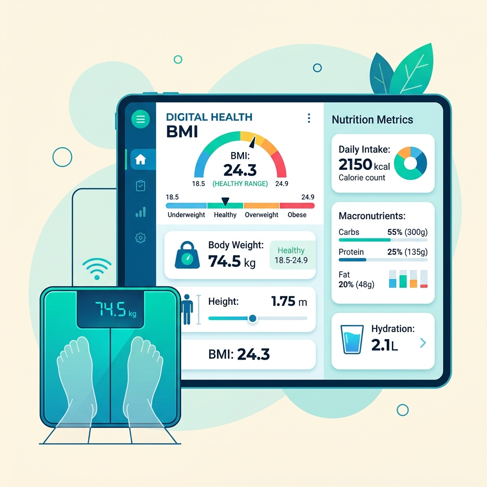
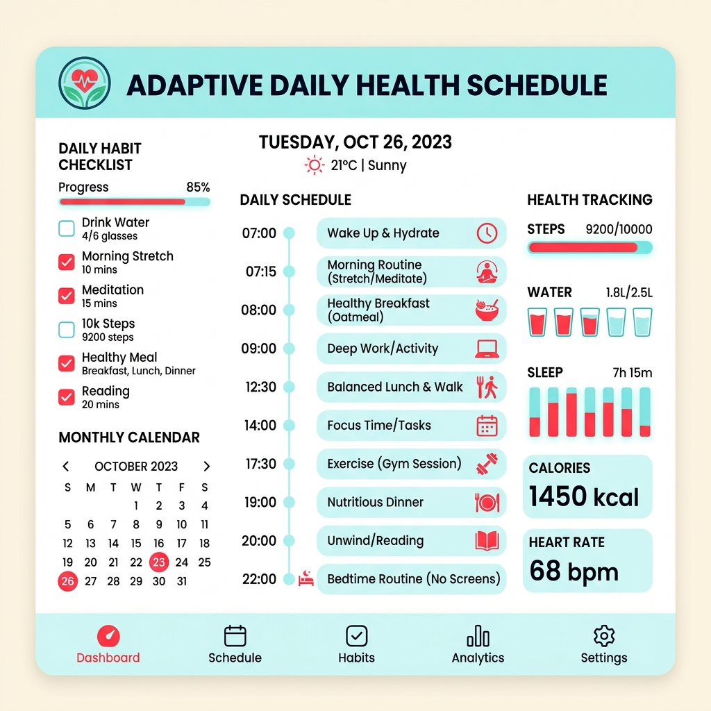
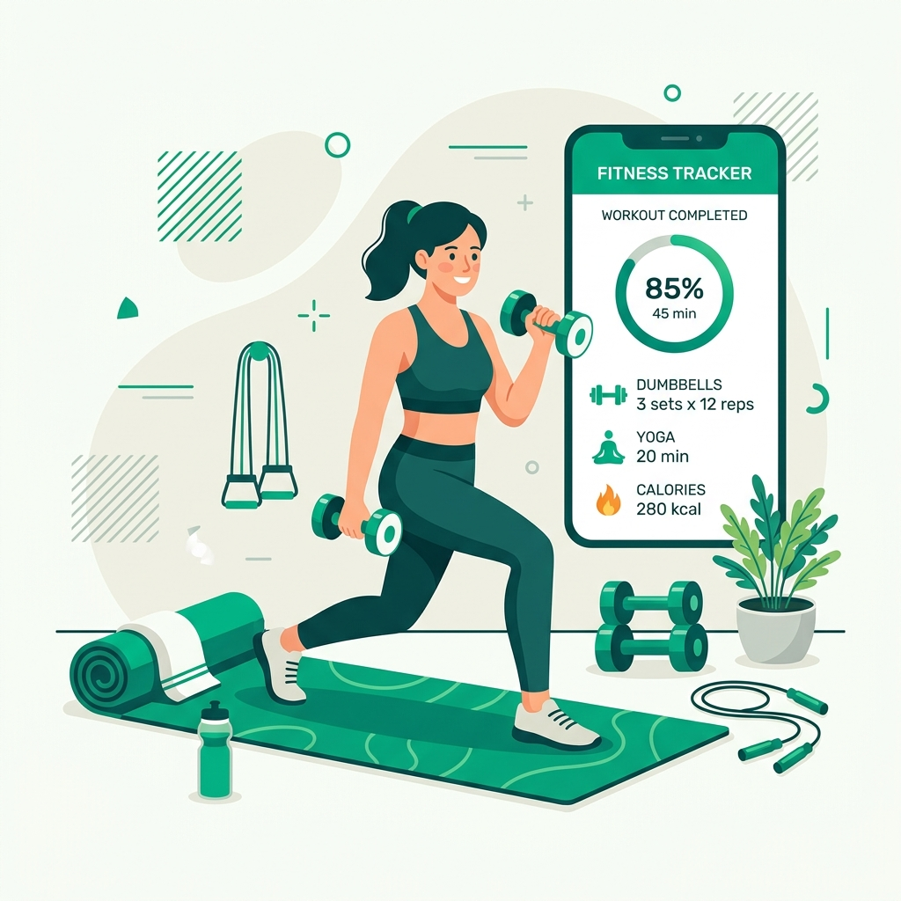
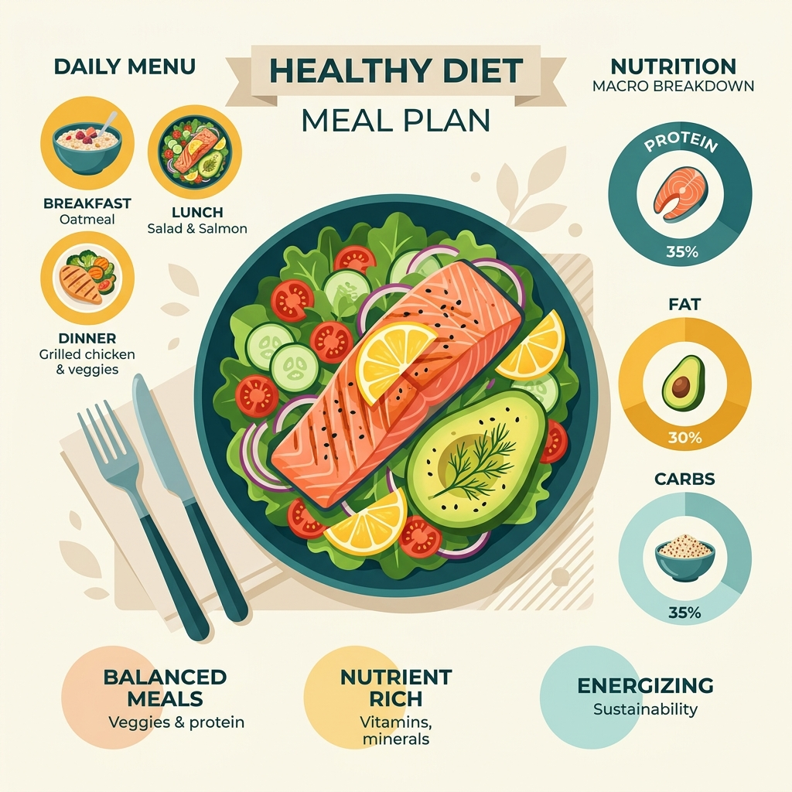

Kalkulator BMI & Kalori
Hitung Indeks Massa Tubuh (BMI) dan estimasi kebutuhan kalori harian sesuai usia, berat badan, dan tinggi badan.
Bingung menentukan pola makan dan olahraga yang sesuai? Sehatin memberikan rencana harian adaptif lengkap dengan kalkulator BMI & hitung kalori harian secara gratis.
Kalkulator Presisi
Hitung Kebutuhan
Daily Plan Otomatis
Personalisasi Otomatis
Empat fitur utama Sehatin untuk mempermudah gaya hidup sehat tanpa kebingungan menentukan nutrisi dan latihan harian.

Hitung Indeks Massa Tubuh (BMI) dan estimasi kebutuhan kalori harian sesuai usia, berat badan, dan tinggi badan.

Rencana kesehatan harian pintar yang secara otomatis menyesuaikan target nutrisi dan jadwal waktu luang.

Variasi gerakan olahraga efektif dari pemula hingga menengah yang hemat waktu, dapat dilakukan di kamar kost.

Rekomendasi resep dan menu makanan sehat lezat, ramah kantong mahasiswa, serta mudah disiapkan sehari-hari.
Fitur perhitungan BMI dan estimasi kebutuhan energi harian sesuai profil tubuh dan aktivitas fisik.
Rencana Sehat Terbuat
Akurasi Perhitungan
Mahasiswa Aktif
Rating Kepuasan
Tantangan mengatur porsi makan gizi seimbang hemat biaya selama 7 hari berturut-turut.
Tips manajemen waktu olahraga 15 menit dan menjaga kestabilan energi harian.
Sesi langsung mempraktekkan perhitungan kalori bahan makanan sehari-hari.
Sehatin lahir dari pemahaman bahwa banyak mahasiswa dan masyarakat umum ingin hidup sehat, namun sering bingung menentukan pola makan dan jenis olahraga yang sesuai dengan kondisi tubuh dan jadwal waktu mereka.
Mulai Rencana Sehatmu